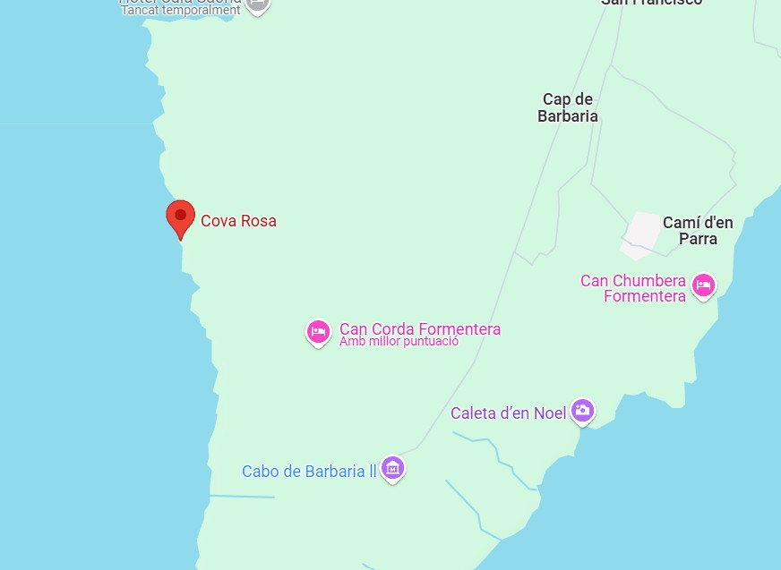

Descripció
Cova amb funció mixta, utilitzada tant com a habitatge com per a pràctiques funeràries. Es tracta de la cova més important de Formentera, amb una gran extensió (uns 8.000 metres quadrats) i amb una llarga història.
Ubicació
La cova està a la zona de Sa Cala, en els cingles de la Mola que miren al Nord-oest

Imatges